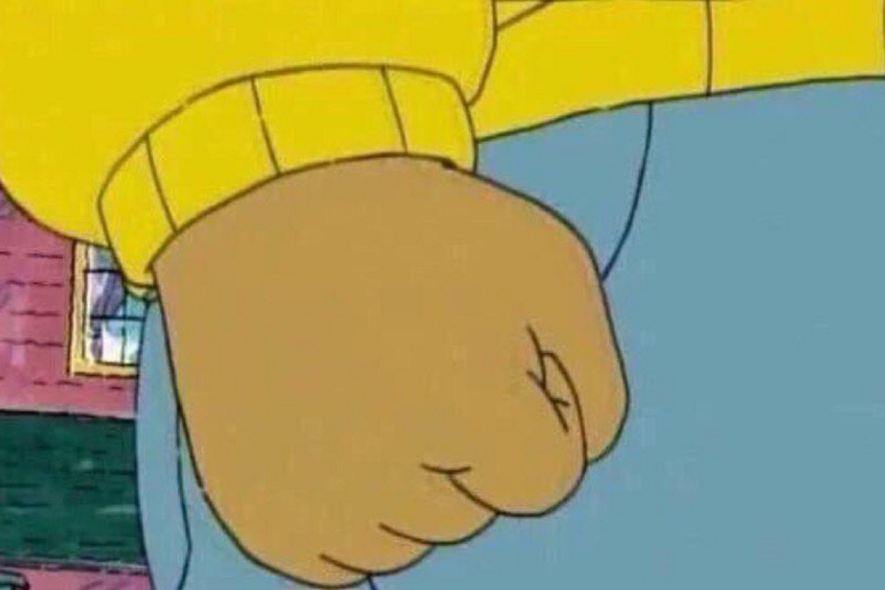
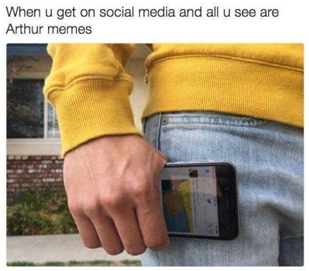

Fun
Arthur's fist

Arthur's Fist is a reaction image featuring a screen capture of the protagonist Arthur from the titular children's television series holding a clenched fist, which is often accompanied by captions describing various infuriating or frustrating circumstances. The image is taken from the Arthur Punches D.W. scene, notable for inspiring a series of YouTube poop videos.
Arthur’s Fist was first used by twitter user @AlmostJT on July 27, 2016.

Here we use some simple javascript and the Math.random() method to animate Arthur's fist.
Inspiration for this implementation comes from Daniel Eden.